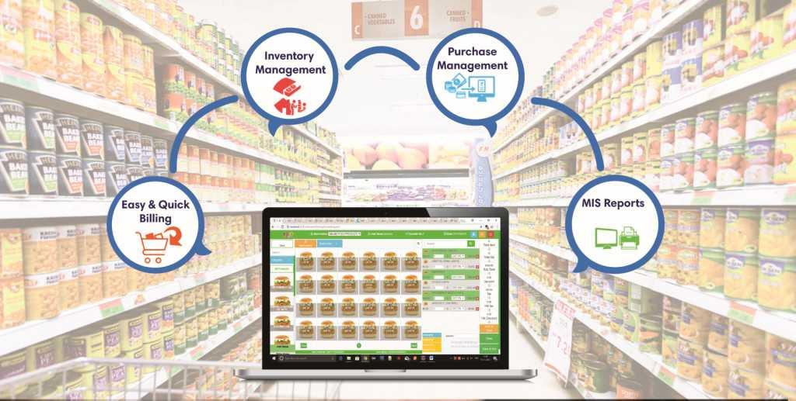

PROJECTS
1- Supermarket Billing System (2022-2023)

* This Project is intended to help supermarkets calculate and show invoices.
* As well as provide faster and more effective customer service.
* For convert form traditional to automated system. Coding Language: C++ language.
* We do work in a group that thing teaches us about teamwork.
2- Attendance Management System (2023-2024)

* The purpose of developing attendance management system is to computerised
the tradition way of taking attendance.
* Another purpose for developing the software is to generate the report
automatically at the end of the session or in the between of the session.
* Attendance Tracking In Real-Time Improved School Security Data is centralized
and Accessible Associated with the handling student details and better organising
the store information.
* And optimum performance thus helping the school to ensure smooth working of these
processes. Database system is also attached with it .
* Coding Language: C# By using OOP principles, SQL